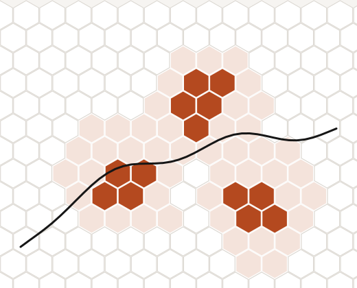
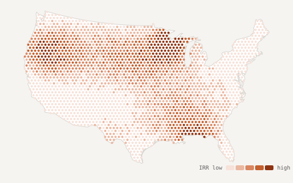
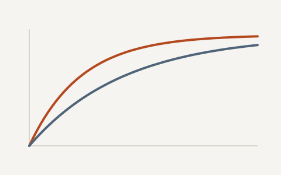
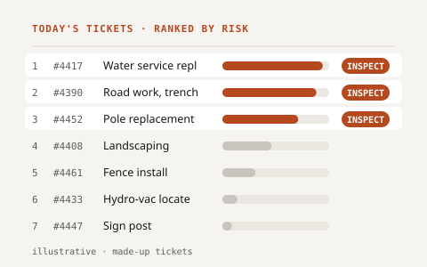
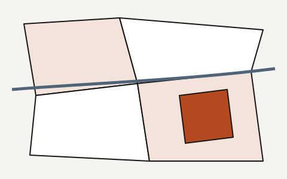

Data Scientist · Machine Learning · Alternative Data
I build statistical and machine learning models on alternative data, along with the end-to-end data and modeling pipelines that take them to production. Most recently in real estate investing; before that, utilities and cancer research.
Shaped by fast-paced startup work: independent, self-driven and quick to learn a new domain.

Case studies from real estate investing and utilities. Charts are illustrative and use synthetic data.

Five linked models turn ~70M transactions into a ranked, budget-constrained portfolio.

Market ranking, building-level lease-up survival models, and alternative-data testing.

A rare-event classifier that ranks 811 tickets so field teams inspect the riskiest digs first.

Open-source small-area units built from road networks, with Aalborg University.
Eight years building forecasting and geospatial models, most recently for real estate investing.
Vice President, Data Scientist (2024–present); Data Scientist (2021–2023). Industrial and single-family investment models, alternative-data research, team tooling.
Senior Data Scientist; Data Scientist. Damage-risk classification and time-series forecasting for utilities.
Geospatial Data Analyst. Spatial and survival models on social determinants of cancer outcomes.
Master of Urban Spatial Analytics (2018); B.S. Landscape Architecture (2017). Earlier school projects → TODO: confirm Cargo address